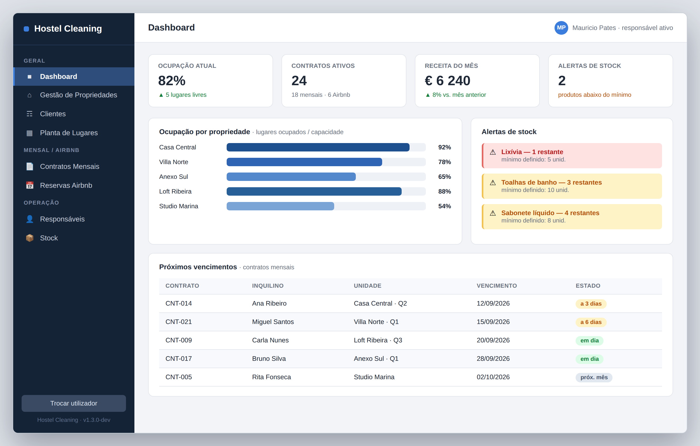

clica para ampliar
Disponível para estágio · nov 2026
Maurício
Maurício
Souza Pates
Full Stack Developer · Python · MySQL · JavaScript
07Projetos
+10Tecnologias em aprendizagem

Técnico Esp. TPSI · IEFP Porto
Stack técnica
// projeto em destaque
Ver todos →
Sistema de Gestão de Hostel
// percurso
Experiência profissional
10+ anos em retalho, liderança e análise comercial — a base que trago para o desenvolvimento de software.
Licenças e certificados
Formação contínua em tecnologia, liderança e gestão — clica em cada bloco para expandir.
Um pouco mais sobre mim
// contacto
Abrir formulário
Vamos falar
Propostas de estágio, colaborações ou só conversa técnica — envia mensagem.